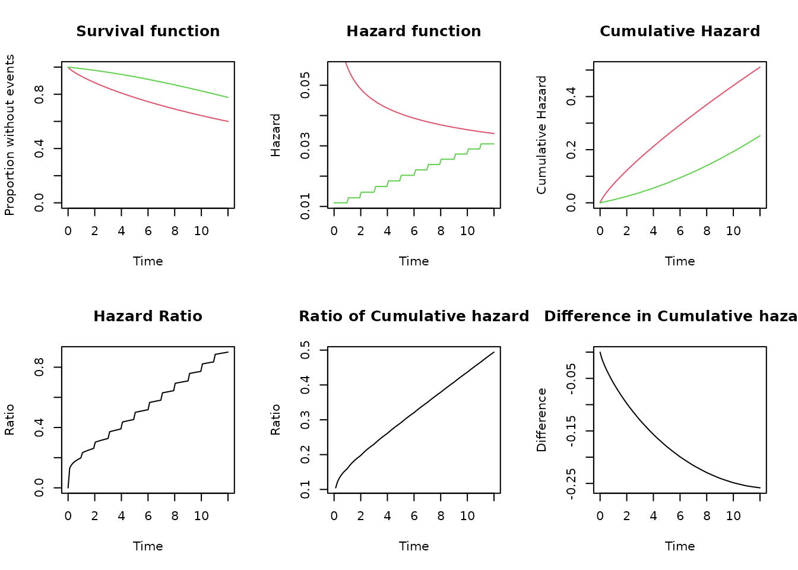

Simulation trials: non-proportional hazard
Source:vignettes/simulation_trials2.Rmd
simulation_trials2.RmdIntroduction
We can use objects of the class SURVIVAL to simulate surviving times in clinical trials. We present in this example the evaluation of empirical power to detect non proportionality of the hazard.
In this example, simulation of the survival times in the control group follows a Weibull distribution with shape 0.8 (negative) and a failure rate of 0.6 at month 12. The experimental group have a vaccine efficacy of 80% during the first month, but it decrease linearly to 10% at month 12. We simulate survival times in the experimental group using a piecewise exponential distribution with changes each month to follow the linear decrease of vaccine efficacy.
The empirical power is define as the percentage the test for non-proportionality p-value is lower or equal than 0.05
Empirical power to evaluate non proportionality of the hazard
Assumptions:
We made 1000 simulations
There are 250 participants in each group, one group is control and the other is vaccinated
The vaccine efficacy is 90% during first month, and it decrease linearly to 15% at the end of month12
The control group follows an Weibull distribution with shape 0.8 and a failure rate of 0.4 at month 12.
The simulated data is analyzed using Cox regression, and the proportionality of the hazard assumption evaluated following the method described by GRAMBSCH and THERNEAU (1994) and implemented in the
survivalpackage with the functioncox.zph()We estimate the empirical power as the percentage of the simulations where the p-value of the coefficient for the group is 0.05 or lower. We present the empirical power and the distribution of the total number of events and the estimated vaccine efficacy
# Number of simulations
nsim = 1000
# Participants in each group
nsubjects = 250
# Follow-up time
ftime <- 12
# Vaccine efficacy
ve_start = 80
ve_end = 10
# Hazard ratio
hr <- function(t){
vm <- ve_start - (ve_start-ve_end)/(ftime-1)*(t-1)
1-vm/100
}
# Fail events in controls
fail_control = 0.4
# Define Object with weibull distribution for events in controls
s_ctrl <- s_weibull(fail = fail_control, t = ftime, shape = 0.8)
# Define Object with Picewise exponential distribution in vaccinated
s_vacc <- s_piecewise(
breaks = c(1:12,Inf),
hazards = c(s_ctrl$hfx(1:12)*hr(1:12), s_ctrl$hfx(12)*hr(12)))The following graph compare the two distributions
compare_survival(s_ctrl, s_vacc, timeto = 12)
Simulation
set.seed(12345)
# Define the group for the subjects
group = c(rep(0, nsubjects), rep(1, nsubjects))
# Loop
sim <- lapply(
1:nsim,
function(x){
# Simulate survival times for event
# Using one distribution for the controls and other for the vaccinated
sim_time_event <- c(s_ctrl$rsurv(nsubjects), s_vacc$rsurv(nsubjects))
# Censor events at end of follow-up.
cevent <- censor_event(censor_time = ftime, time = sim_time_event, event = 1)
ctime <- censor_time(censor_time = ftime, time = sim_time_event)
# Analyze the data using cox regression
reg <- coxph(Surv(ctime, cevent)~ group)
sreg <- summary(reg)
phz <- cox.zph(reg)
# Collect the information
pval = phz$table["group","p"]
ve = (1- exp(sreg$coefficients["group","coef"]))*100
nevents = sreg$nevent
# return values
return(data.frame(simid = x, pval,ve, nevents))
}
)
# Join all the simulations in a single data frame
sim_df <- do.call(rbind, sim)Analyze the simulation
empirical_power = binom.test(sum(sim_df$pval <= 0.05), length(sim_df$pval))
empirical_power$estimate
#> probability of success
#> 0.839
empirical_power$conf.int
#> [1] 0.8147291 0.8612550
#> attr(,"conf.level")
#> [1] 0.95
# Distribution of the simulated VE estimated under PH assumpation
summary(sim_df$ve)
#> Min. 1st Qu. Median Mean 3rd Qu. Max.
#> 23.74 47.63 52.98 52.32 57.82 72.81
# Distribution of the simulated number of events
summary(sim_df$nevents)
#> Min. 1st Qu. Median Mean 3rd Qu. Max.
#> 126 149 156 156 163 184Conclusion
The simulation provides an estimate of the empirical power to reject the proportionality of the hazard assumption in this condition as 83.9% with a 95%CI of ( 81.5%, 86.1% )